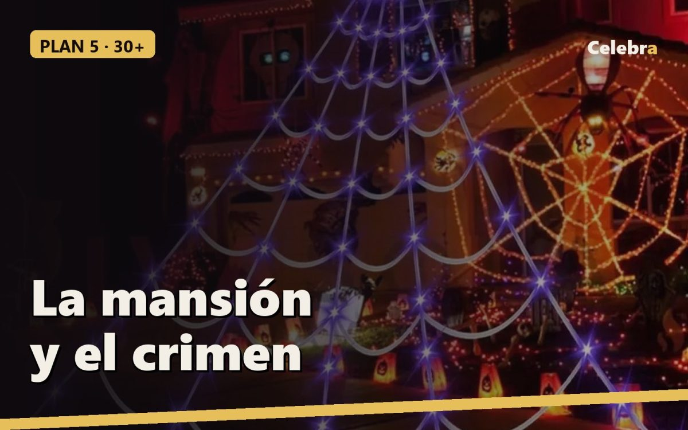

Plan 5 · Halloween con cena elegante (de 30 en adelante): la mansión y el crimen

Este plan es para el grupo que ya no quiere una fiesta sino una noche: cena sentados, luz de velas, buena música y un juego que dura toda la cena. La tendencia de este año en fiestas de adultos es exactamente esta: mansión gótica, cóctel oscuro y crimen por resolver. De 6 a 12 invitados, vestidos para la ocasión.
Horario
- 20:30 Llegada y cóctel de bienvenida en la entrada. Cada invitado recibe un sobre con su personaje.
- 21:00 Primer plato. Se lee en voz alta el crimen.
- 21:40 Segundo plato. Primera ronda de interrogatorios.
- 22:30 Postre. Acusaciones y resolución.
- 23:15 Sobremesa, cata de "pociones", segunda copa.
- 00:00 Película clásica en el sofá.
- 01:00 Fin.
Qué poner y dónde
- La mesa larga: tela negra gigante como mantel (o encima de un mantel blanco, rasgada, para que asome), candelabros con velas LED de llama, copas de cristal, un centro con calabazas pequeñas blancas y ramas secas. Tarjetas con el nombre de cada personaje en cada sitio.
- El invitado que no vino: el esqueleto articulado sentado a la mesa, con copa y servilleta, en el sitio del "difunto". Es el muerto del juego y el detalle del que todos hablan.
- La entrada y el balcón: telaraña de 5 metros con luces LED en modo fijo, luz baja. Desde la calle parece que la casa espera visita.
- La luz: nada de techo. Lámparas de pie, velas LED y una bombilla ámbar en el pasillo.
Tres disfraces
- Vampiro con clase: traje oscuro, camisa negra, un anillo grande y ojeras marcadas. Sin capa de plástico.
- Viuda negra: vestido negro, velo corto (tul de bazar sobre una diadema), guantes y labios oscuros.
- Médico de la peste: máscara con pico y capa con capucha sobre ropa negra. El invitado misterioso que llega el último y no habla hasta el segundo plato.
El crimen: "El testamento de la mansión Sombra"
Un juego de cena con asesinato que se puede montar sin comprar nada. El anfitrión hace de notario y no juega.
La historia: el dueño de la mansión, don Aurelio Sombra, ha aparecido muerto la noche antes de leer su testamento. Todos los invitados estaban en la casa.
Los personajes (el anfitrión escribe una tarjeta por invitado con un secreto y un motivo): la sobrina heredera, el socio arruinado, la médium que "hablaba" con la mujer del difunto, el médico de cabecera, la cocinera que lleva treinta años en la casa, el vecino que quería comprar la finca, la joven esposa, el sobrino jugador. Uno de ellos recibe además la tarjeta "eres el culpable" y una coartada falsa.
Cómo se juega: en cada plato, el notario lee una pista (la hora de la muerte, un objeto encontrado, una carta). Los invitados pueden hacer una pregunta a otro invitado por ronda, y el preguntado debe responder con la verdad salvo el culpable, que puede mentir una vez por plato. En el postre, cada uno acusa por escrito. Si la mayoría acierta, el culpable paga el vino de la próxima cena; si no, se lo lleva el culpable.
Si preferís un kit hecho, hay juegos de cena con asesinato imprimibles en castellano por menos de 15 euros; buscad "cena con asesinato" y elegid uno para vuestro número de invitados.
Menú
- Bienvenida: cóctel oscuro (ginebra, tónica y un chorrito de sirope de moras) o su versión sin alcohol.
- Primero: crema de calabaza servida en cuencos negros, con una gota de nata dibujando una telaraña.
- Segundo: carne asada con reducción de vino tinto ("salsa del crimen") o, sin carne, risotto de setas con tinta de calamar.
- Postre: tarta de queso con coulis de frutos rojos que gotee por el lado.
- Cata de pociones: tres licores servidos en copas pequeñas sin decir cuál es cuál; se adivina.
Música
Jazz oscuro y voces graves, a volumen de conversación: Red Right Hand (Nick Cave), I Put a Spell on You (Nina Simone), Season of the Witch, Bad Moon Rising, Somebody's Watching Me, y para el momento de las acusaciones, el Tubular Bells de Mike Oldfield.
Película
Los otros (Amenábar) es la película perfecta para cerrar esta noche: elegante, sin sangre y con un final que da que hablar en la sobremesa. Si el grupo quiere miedo de verdad, Expediente Warren.
Lista de la compra
| Qué | Dónde | |---|---| | Tela negra gigante (mantel) | tienda Celebra | | Esqueleto articulado (el difunto en la mesa) | tienda Celebra | | Máscara y capa de médico de la peste | tienda Celebra | | Telaraña de 5 m con luces LED | tienda Celebra | | Velas LED de llama, candelabros, calabazas blancas, tul, cartulinas para las tarjetas | bazar | | Calabaza, nata, carne o setas, vino tinto, tarta de queso, frutos rojos, ginebra, tónica, sirope de moras | supermercado |
Presupuesto sin la decoración de Celebra: 15-20 euros por persona, con la bebida incluida.
Lo que sale en este artículo

Tela negra de terror gigante
76 x 183 cm de gasa rasgada para ventanas, puertas y mesas

Esqueleto articulado decorativo
Brazos, piernas y mandíbula móviles. Se sienta, se cuelga o se posa

Máscara y capa de médico de la peste
Disfraz completo de talla única: máscara de pico, capa con capucha y sombrero

Telaraña gigante con 250 luces LED
5 metros de telaraña con luces moradas, 8 modos de luz, para fachada, balcón o jardín